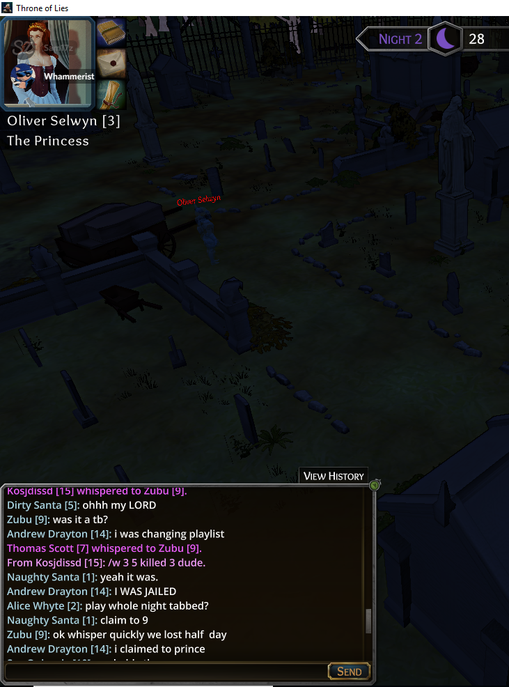
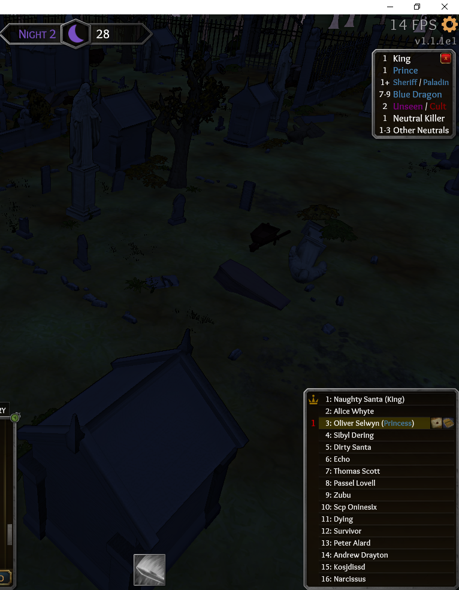
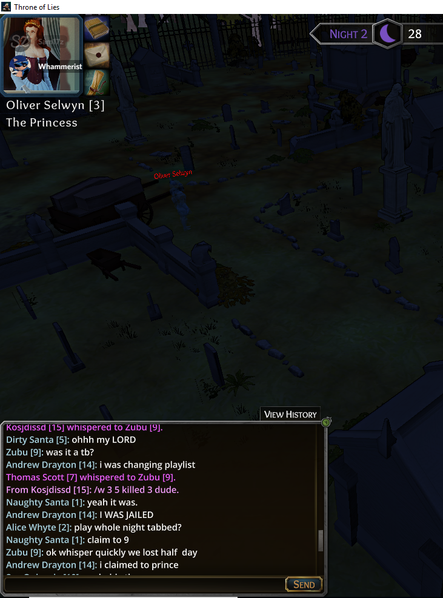
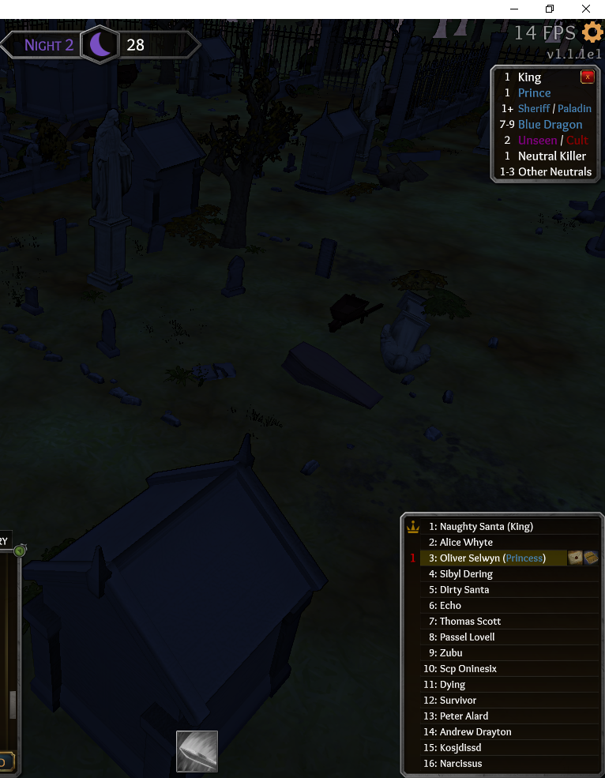

What happened?
I got whispered when I was dead
What was SUPPOSED to happen?
It was supposed to say 15: /w 3 (the message)
Steps to reproduce:
Whisper a dead person
Comments:
Whammerist can confirm this along with the image.



I got whispered when I was dead
It was supposed to say 15: /w 3 (the message)
Whisper a dead person
Whammerist can confirm this along with the image.


I catch bugs and I am not even a bug tester
lies.
there is no dead
Btw were you reaped?
I was dead the image shows that I am number 3 princess who died. Then I got whispered.
I’ve seen this happen on RioxPlays’ stream as well. Also, you can whisper yourself.
It’s not entirely a bad thing though, since it prevents failed whispers from being sent to public chat.
But here, 15 whispered me the princess number 3 when I was dead.